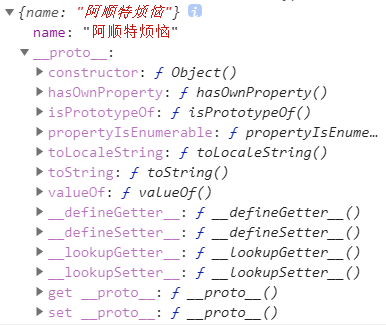
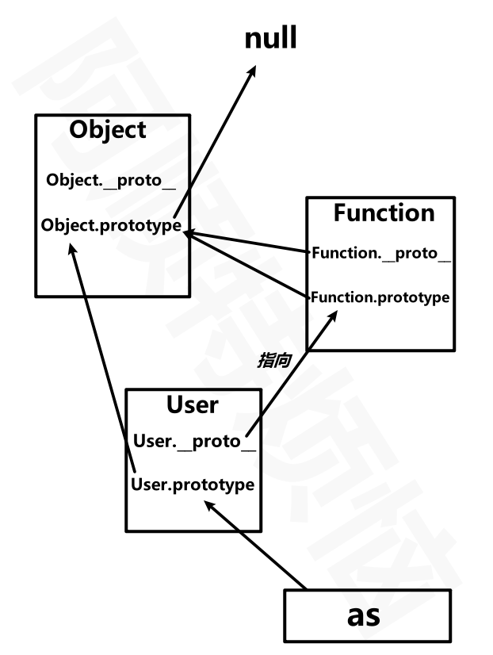
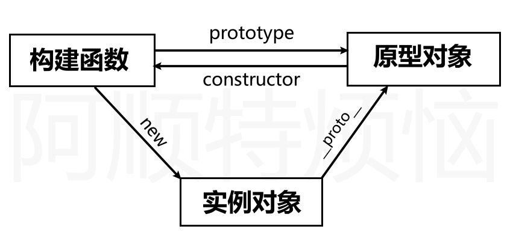
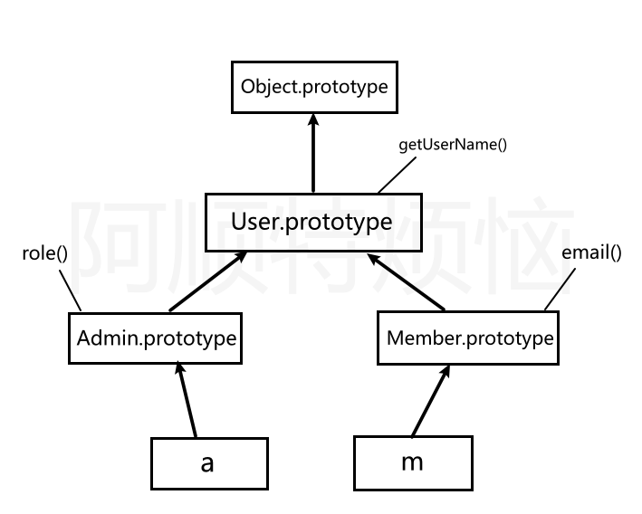
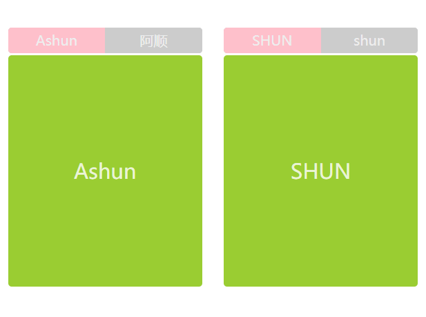

原型与继承 原型基础 原型对象 我们知道，在Javascript中，任何一个种类其实都是对象。我们可以访问该对象的属性和方法，但是如果对象本身没有某属性、方法，就会从对象的原型上去查找，如果对象的原型上存在你要使用的属性、方法，则将会使用原型上的对应属性和方法。
可以将原型理解为对象的父亲，对象从原型对象继承来属性、方法
所有函数的原型默认是 Object的实例，所以可以使用toString/toValues/isPrototypeOf 等方法的原因
使用原型对象为多个对象共享属性或方法
如果对象本身不存在属性或方法才到原型上查找，若对象本身和原型具有同名属性、方法，则会使用对象本身的属性、方法。
使用原型可以解决，通过构建函数创建对象时复制多个函数造成的内存占用问题
原型对象prototype默认包含 constructor 属性，指向构造函数
对象具有 __proto__ 属性，指向它构造函数的原型对象prototype
构造函数的prototype是用来让实例对象继承的。
prototype是构造器/函数/class天生具有的属性
当然，普通的函数也可以是构造函数、工厂函数。所以普通函数也具有prototype，让实例化对象来继承。
原型链的顶点是Object.prototype,所有对象都继承于该原型。
下例就是使用数组原型上的 concat 方法完成的连接操作
1 2 3 4 let as = ["a"]; console.log(as.concat("b")); //["a","b"] console.log(as.concat("c",["d","e"],[[[["f"]]]])); //["a","c","d","e",["f"]] console.log(as); //["a"]
默认情况下创建的对象都有：继承而来的构造函数原型

由于a本身是由Objec构造函数创建的，所以a继承的是Object.prototype
a.constructor和a.__proto__.constructor其实是一样的。因为a本身没有constructor属性，所以访问的就是原型上的constructor。
1 2 3 4 5 let a = { name: "阿顺特烦恼" }; console.log(a); console.log(a.constructor);// ƒ Object() {} console.log(a.__proto__.constructor);// ƒ Object() {} console.log(a.__proto__ == Object.prototype); //true
我们也可以创建一个极简对象（纯数据字典对象）没有原型（原型为null)
1 2 3 4 5 6 7 8 9 10 11 12 let obj = { name: 3 }; console.log(obj.hasOwnProperty("name")); let as = Object.create(null, { name: { value: "阿顺" } }); console.log(as.hasOwnProperty("name")); //Error:hasOwnProperty not undefined //Object.keys是静态方法，不是原型方法所以是可以使用的,但也不会返回正常结果，因为该方法也依赖于原型上的迭代接口。 console.log(Object.keys(as));//[]
函数具有两个原型对象：prototype、__proto__
之前说过，只有函数具有prototype，用于让实例继承。
但是在JS中，任何类型其实都是对象，当把函数看作对象时，其也就具有__proto__,用来访问自身的构造函数的原型。
1 2 3 4 5 6 7 8 9 10 11 12 function User() {} User.__proto__.view = function() { console.log("User MakeFunction view method"); }; User.view(); User.prototype.show = function() { console.log("阿顺特烦恼"); }; let as = new User(); as.show(); console.log(User.prototype == as.__proto__);
1 2 3 4 5 6 7 …… console.log(User.__proto__ == User.constructor.prototype); console.log(User.constructor.prototype == Function.prototype); console.log(User.__proto__.__proto__ == Object.prototype); console.log(User.prototype.__proto__ == Object.prototype); console.log(Object.__proto__.__proto__ == Object.prototype); console.log(Object.prototype.__proto__ == null);
是不是感觉Object.__proto__.__proto__ == Object.prototype很难理解？我们可以进行拆解
1 2 3 console.log(Object.__proto__.__proto__ == Object.prototype); console.log(Object.__proto__ == Function.prototype); console.log(Function.prototype.__proto__ == Object.prototype);
下面是原型关系分析，与方法继承的示例
实例对象，只有一个__proto__接口，用于访问构造函数的prototype
而函数/构造函数都有两个原型接口：prototype用于让实例对象继承、__proto__用于让自身继承构造自己的构造函数的prototype

1 2 3 4 5 6 7 8 9 10 11 let as = new Object(); as.name = "阿顺"; Object.prototype.show = function() { console.log("阿顺特烦恼"); }; as.show(); function User() {} let shun = new User(); shun.show(); User.show();
下面是使用构造函数创建对象的原型体现
构造函数拥有原型
创建对象时构造函数把原型赋予对象

constructor存在于prototype原型中，用于指向构建函数。
1 2 3 4 5 function User() {} let as = new User(); console.log(as.__proto__ == User.prototype); console.log(as.__proto__.constructor == User); console.log(as.constructor == User);
使用对象的 constructor 创建对象
1 2 3 4 5 6 7 8 9 10 11 12 13 14 function User(name, age) { this.name = name; this.age = age; } function createByObject(obj, ...args) { const constructor = obj.__proto__.constructor; // const constructor = Object.getPrototypeOf(obj).constructor; return new constructor(...args); } let as = new User("阿顺", 18); let zs = createByObject(as, "张三", 7); console.log(zs);
原型链 多个原型对象之间的继承，形成的多层级关系，可以抽象为一个链条，即原型链。
从之前的图解中也能够看出这种关系。
获取\设置原型 getprototypeOf
setPrototypeOf
Object.create 使用Object.create(sup,{desc…})在创建对象时设置新对象的父级原型。
参数1：设置新对象的父级原型
参数2：为新对象配置属性，以属性描述的形式，相当于Object.defineProperties的形式。
只设置原型
1 2 3 4 5 6 7 8 9 let user = { show() { return this.name; } }; let as = Object.create(user); as.name = "阿顺"; console.log(as.show());
设置原型并赋予新对象属性
1 2 3 4 5 6 7 8 9 10 11 12 13 14 15 16 17 18 19 20 let sup = { name: "Ashun", type: "Controller", }; let obj = Object.create(sup, { show: { value: function () { console.log(this.name); console.log(Object.getPrototypeOf(this).name); }, writable: false, enumerable: true, }, type:{ value:"VIP", configurable:false } }); obj.show(); //Ashun Ashun console.log(obj.type) //VIP
原型检测 instanceof instanceof 检测构造函数的 prototype 属性是否出现在某个实例对象的原型链上
1 2 3 4 5 6 7 8 9 10 11 12 13 14 15 16 17 18 19 function A() {} function B() {} function C() {} let c = new C(); B.prototype = c; let b = new B(); A.prototype = b; let a = new A(); console.log(a instanceof A); console.log(a instanceof B); console.log(a instanceof C); console.log(b instanceof B); console.log(b instanceof C);
isPrototypeof 使用isPrototypeOf检测一个对象是否是另一个对象的原型链中
a.isPrototypeOf(b)检测a对象是否在b的原型链上
1 2 3 4 5 6 7 8 9 10 11 12 13 14 const a = {}; const b = {}; const c = {}; Object.setPrototypeOf(a, b); Object.setPrototypeOf(b, c); console.log(b.isPrototypeOf(a)); //true console.log(c.isPrototypeOf(a)); //true console.log(c.isPrototypeOf(b)); //true console.log(Object.prototype.isPrototypeOf({})); //true let num = new Number(1); console.log(Object.prototype.isPrototypeOf(num));
属性遍历 使用in 检测原型链上是否存在属性，使用 hasOwnProperty 只检测当前对象
1 2 3 4 5 6 let a = { url: "Ashuntefannao" }; let b = { name: "阿顺" }; Object.setPrototypeOf(a, b); console.log("name" in a); console.log(a.hasOwnProperty("name")); console.log(a.hasOwnProperty("url"));
使用 for/in 也会遍历原型链上的属性
1 2 3 4 5 6 7 8 9 10 let as = { name: "阿顺" }; let shun = Object.create(as, { url: { value: "Ashuntefannao.com", enumerable: true } }); for (const key in shun) { console.log(key); }
hasOwnProperty 方法判断对象是否存在属性，而不会查找原型 。所以如果只想遍历对象属性使用以下代码
1 2 3 4 5 6 7 8 9 10 11 12 let as = { name: "阿顺" }; let shun = Object.create(as, { url: { value: "Ashuntefannao.com", enumerable: true } }); for (const key in shun) { if (xj.hasOwnProperty(key)) { console.log(key); } }
之前所说的Object内置迭代器：Object.keys()、Object.values()、Object.entries(),它们只能够获得自身的、可枚举 的属性
1 2 3 4 5 6 7 8 9 10 11 12 function User(name) { Object.defineProperty(this, "site", { value: "Ashuntefannao.com", enumerable: false, }); this.name = name; } User.prototype.show = function () { console.log(this.name); }; let as = new User("阿顺"); console.log(Object.keys(as));//["name"]
借用原型 使用 call 或 apply 可以借用其他原型方法完成功能。
下面的shun对象不能使用max方法，但可以借用 as 对象的原型方法
1 2 3 4 5 6 7 8 9 10 11 12 13 14 15 let as = { data: [1, 2, 3, 4, 5], }; Object.setPrototypeOf(as, { max: function (data) { return data.sort((a, b) => b - a)[0]; }, }); console.log(as.max(as.data)); let shun = { lessons: { js: 100, php: 78, node: 78, linux: 125 }, }; console.log(as.__proto__.max.call(as, Object.values(shun.lessons)));
也可使用系统自带的 Math.max 。
1 2 3 4 5 6 7 8 9 10 let as = { data: [1, 2, 3, 4, 5] }; console.log(Math.max.apply(null, Object.values(as.data))); console.log(Math.max.apply(null, as.data)); let shun = { lessons: { js: 100, php: 78, node: 78, linux: 125 } }; console.log(Math.max.apply(shun, Object.values(.lessons)));
下面是获取设置了 class 属性的按钮，但NodeList类数组不能直接使用数组的filter 等方法，但借用数组的原型方法就可以操作了。
1 2 3 4 5 6 7 8 9 10 <body> <button class="red">阿顺</button> <button>Ashun</button> </body> <script> let btns = document.querySelectorAll("button"); btns = Array.prototype.filter.call(btns, item => { return item.hasAttribute("class"); }); </script>
this this 不受原型继承影响，this 指向调用属性时使用的对象。
1 2 3 4 5 6 7 8 9 10 11 let shun = { name: "阿顺特烦恼" }; let as = { name: "阿顺", show() { return this.name; } }; shun.__proto__ = as; console.log(shun.show()); //阿顺特烦恼
1 2 3 4 5 6 7 8 9 10 11 12 13 14 15 16 17 18 19 20 21 22 23 24 25 26 27 28 29 30 { function Fn() { this.x = 100; this.y = 200; this.getX = function () { console.log(this.x); }; } Fn.prototype.getX = function () { console.log(this.x); }; Fn.prototype.getY = function () { console.log(this.y); }; var f1 = new Fn(); var f2 = new Fn(); console.log(f1.getX === f2.getX); //false console.log(f1.getY === f2.getY); //true console.log(f1.__proto__.getY === Fn.prototype.getY); //true console.log(f1.__proto__.getX === f2.getX); //false console.log(f1.__proto__.getX === Fn.prototype.getX); //true console.log(f1.constructor); //Fn console.log(Fn.prototype.__proto__.constructor); //Object f1.getX(); //100 (使用其本身的getX，this=》f1) f1.__proto__.getX(); //undefined (通过原型调用，this=》f1.__proto__) f2.getY(); //200 (虽然使用的是原型上的方法，但是通过f2调用，this=》f2) Fn.prototype.getY(); //undefined (通过原型调用，this=》f1.__proto__) }
1 2 3 4 5 6 7 8 9 10 11 12 13 14 15 16 17 18 19 20 21 22 23 24 25 26 27 28 29 30 31 { function fun(){ this.a = 0; this.b = function(){ console.log(this.a); } } fun.prototype = { b: function(){ this.a = 20; console.log(this.a); }, c: function(){ this.a = 30; console.log(this.a); } } var my_fun = new fun(); my_fun.b(); //私有方法 this=>my_fun console.log(my_fun.a); my_fun.c(); //公有方法 this=>my_fun this.a = 30（将私有属性a修改为30） console.log(my_fun.a); var my_fun2 = new fun(); console.log(my_fun2.a); my_fun2.__proto__.c(); //this=>my_fun2.__proto__ 在原型对象上增加了一个a:30 console.log(my_fun2.a); console.log(my_fun2.__proto__.a); } //0,0,30,30,0,30,0,30
使用建议 prototype 引用属性 原型中保存引用类型属性会造成对象共享属性，所以一般只会在原型中定义方法。
1 2 3 4 5 6 7 8 9 10 11 function User() {} User.prototype = { lessons: ["JS", "VUE"] }; const as = new User(); const shun = new User(); as.lessons.push("CSS"); console.log(as.lessons); //["JS", "VUE", "CSS"] console.log(shun.lessons); //["JS", "VUE", "CSS"]
普通函数的原型默认只有一个constructor属性，用于指向自身，这样在实例化后，就能让实例访问自身的构造函数。
1 2 function User() {} console.log(User.prototype);
更改原型
自定义构造函数的原型可以手动更改系统内置构造函数的原型:只能读、不能改
下例是手动更改自定义构造函数的原型，以下代码直接设置了构造函数的原型将造成 constructor 丢失
1 2 3 4 5 6 7 function User() {} User.prototype = { show() { return `外部更改了默认的prototype`; }, }; console.log(User.prototype); // {show: ƒ}
正确的做法是要保证原型中的 constructor指向构造函数
1 2 3 4 5 6 7 8 function User() {} User.prototype = { constructor:User, show() { return `外部更改了默认的prototype`; }, }; console.log(User.prototype); // {constructor: ƒ, show: ƒ}
实例对象的原型引用构造函数的原型对象，是在创建对象时确定的，当构造函数原型对象改变时会影响后面创建的实例对象。
1 2 3 4 5 6 7 8 9 10 11 function User() {} User.prototype.name = "Ashun"; const obj1 = new User(); console.log(obj1.name); //Ashun User.prototype = { constructor:User, name: "阿顺" }; const obj2 = new User(); console.dir(obj2.name); //阿顺
系统内置构造函数的原型:为只读属性，外部不可更改，严格模式下会报错
1 2 3 4 5 6 String.prototype = { show() { return `外部更改了默认的prototype`; }, }; console.log(String.prototype);
1 2 3 4 5 6 "use strict" String.prototype = { show() { return `外部更改了默认的prototype`; }, };
原型管理 通过前介绍我们知道可以使用多种方式设置原型，下面是按时间顺序的排列
prototype 构造函数的原型属性Object.create 创建对象时指定原型__proto__ 声明自定义的非标准属性设置原型，解决之前通过 Object.create 定义原型，而没提供获取方法Object.setPrototypeOf 设置对象原型
以上几种方式都可以管理原型，一般我使用 prototype 更改自定义构造函数原型，使用 Object.setPrototypeOf 设置对象原型。
由于__proto__是一个非标准属性，所以使用Object.getPrototypeOf，获取对象原型。
构造函数 使用优化 使用构造函数会产生 函数复制 即 函数不能共享 的问题造成内存占用。
1 2 3 4 5 6 7 8 9 function User(name) { this.name = name; this.get = function() { return this.name; }; } let zs = new User("张三"); let lisi = new User("李四"); console.log(zs.get == lisi.get); //false
将方法定义在原型上让对象共享，解决通过构造函数创建对象时函数复制的内存占用问题
1 2 3 4 5 6 7 8 9 10 11 12 13 14 15 16 17 function User(name) { this.name = name; } User.prototype.get = function() { return "阿顺特烦恼" + this.name; }; let lisi = new User("李四"); let wangwu = new User("王五"); console.log(lisi.get == wangwu.get); //true //通过修改原型方法会影响所有对象调用，因为方法是共用的 lisi.__proto__.get = function() { return "Ashun" + this.name; }; console.log(lisi.get()); console.log(wangwu.get());
下面演示使用原型让多个实例共享属性
1 2 3 4 5 6 7 8 9 10 11 12 13 function User(name, age) { this.name = name; this.age = age; this.show = () => { return `你在${this.site}的姓名:${this.name}，年龄:${this.age}`; } } User.prototype.site = '-阿顺特烦恼-'; let lisi = new User('李四', 12); let xiaoming = new User('小明', 32); console.log(lisi.show()); //你在-阿顺特烦恼-的姓名:李四，年龄:12 console.log(xiaoming.show()); //你在-阿顺特烦恼-的姓名:小明，年龄:32
使用Object.assign一次设置原型方法来复用，后面会使用这个功能实现Mixin模式
1 2 3 4 5 6 7 8 9 10 11 12 13 14 15 16 function User(name, age) { this.name = name; this.age = age; } Object.assign(User.prototype, { getName() { return this.name; }, getAge() { return this.age; } }); let lisi = new User('李四', 12); let xiaoming = new User('小明', 32); console.log(lisi.getName()); //李四 console.log(lisi.__proto__)
继承与多态 当对象自身不存在将要使用的属性时，JS会从原型上获取这就是继承在JavaScript中的实现。
继承实现 下面使用Object.create 创建对象并指定原型，做为Admin、Member的原型对象来实现继承。

使用Object.create 创建一个对象，虽然没有赋予任何属性，但是为这个空对象指定了原型，所以能够实现原型的继承。
1 2 3 4 5 6 7 8 9 10 11 12 function User() {} User.prototype.getUserName = function() {}; function Admin() {} Admin.prototype = Object.create(User.prototype); Admin.prototype.role = function() {}; function Member() {} Member.prototype = Object.create(User.prototype); Member.prototype.email = function() {}; console.log(new Admin()); console.log(new Member());
不能使用以下方式操作（直接赋值），因为这样会改变User的原型方法，这不是继承，这是改变原型。相当于Admin的原型完全引用了User的原型对象，二者是同一个内存地址。
1 2 3 4 5 6 7 8 ... function User() {} User.prototype.getUserName = function() {}; function Admin() {} Admin.prototype = User.prototype; Admin.prototype.role = function() {}; ...
构造函数 有多种方式通过构造函数创建对象
直接new构造函数
通过原型找到constructor,然后再new实例化
1 2 3 4 5 6 7 8 function Admin() {} console.log(Admin == Admin.prototype.constructor); //true let as = new Admin.prototype.constructor(); console.log(as); let shun = new Admin(); console.log(shun);
因为有时根据得到的对象获取构造函数，然后再创建新对象，所以需要保证构造函数存在，但如果直接设置 Admin.prototype ，却没有为其保留constructor属性，会造成默认的constructor丢失，所以需要再次设置constructor值。
1 2 3 4 5 6 7 8 9 10 11 12 13 14 15 16 function User() {} function Admin() {} Admin.prototype = Object.create(User.prototype); Admin.prototype.role = function() {}; let as = new Admin(); console.log(as.constructor); //constructor丢失，返回User构造函数 Admin.prototype.constructor = Admin; let shun = new Admin(); console.log(shun.constructor); //正确返回Admin构造函数 //现在可以通过对象获取构造函数来创建新对象了 console.log(new shun.constructor());
使用Object.defineProperty设置属性特征描述，来禁止遍历constructor属性
1 2 3 4 5 6 7 8 9 10 11 12 13 14 15 16 function User() {} function Admin(name) { this.name = name; } Admin.prototype = Object.create(User.prototype); Object.defineProperty(Admin.prototype, "constructor", { value: Admin, enumerable: false //禁止遍历 }); let as = new Admin("阿顺"); for (const key in as) { console.log(key); }
完全重写构建函数原型，只对后面创建的实例对象有效
1 2 3 4 5 6 7 8 9 10 11 function User() {} const lisi = new User(); User.prototype = { show() { return "prototype show"; } }; const wangwu = new User(); console.log(wangwu.show()); console.log(lisi.show()); // lisi.show is not a function
方法重写 下而展示的是子类需要重写父类方法的技巧。
在子类构造函数的原型上压入 与 父类构造函数原型上的 同名方法
当对象本身没有使用的方法时，会逐级向原型链上层查找。
1 2 3 4 5 6 7 8 9 10 11 12 13 14 15 16 17 18 function Person() {} Person.prototype.getName = function() { console.log("parent method"); }; function User(name) {} User.prototype = Object.create(Person.prototype); User.prototype.constructor = User; User.prototype.getName = function() { //调用父级同名方法 Person.prototype.getName.call(this); console.log("child method"); }; let as = new User(); as.getName(); console.log(Object.getPrototypeOf(as).getName == Object.getPrototypeOf(Object.getPrototypeOf(as)).getName); //false
多态 多态：根据多种不同的形态产生不同的结果。
下而会根据不同类型的对象得到不同的结果。
1 2 3 4 5 6 7 8 9 10 11 12 13 14 15 16 17 18 19 20 function Person() {} Person.prototype.show = function () { console.log(this.desc); }; function Admin() {} Admin.prototype = Object.create(Person.prototype); Admin.prototype.desc = "管理员的蔑视"; function Member() {} Member.prototype = Object.create(Person.prototype); Member.prototype.desc = "我是Vip"; function Enterprise() {} Enterprise.prototype = Object.create(Person.prototype); Enterprise.prototype.desc = "企业账户"; let users = [new Admin(), new Member(), new Enterprise()]; for (const user of Object.values(users)) user.show();
深挖继承 继承是为了复用代码，继承的本质是将原型指向到另一个对象。
构造函数 我们希望调用父类构造函数完成对象属性的初始化，但像下面这样使用是不会成功的。因为此时 this 指向了window，无法为当前对象声明属性。
下例通过Admin构造函数创建实例，但是希望在Admin中 使用父级构造函数User来初始化实例的属性。
但是如果直接调用User函数，由于独立存在的函数this指向window，所以不能够为Admin实例赋予属性
1 2 3 4 5 6 7 8 9 10 11 12 13 14 15 16 function User(name) { this.name = name; console.log(this);// Window } User.prototype.getUserName = function() { return this.name; }; function Admin(name) { User(name); } Admin.prototype = Object.create(User.prototype); let as = new Admin("阿顺"); console.log(as.getUserName()); //undefined console.log(window.name); //阿顺
解决上面的问题是使用 call/apply 改变User函数的this指向，为每个生成的对象设置属性。
因为这里只是简单的调用User构造函数，所以需要改变this指向，不然this指向window。构造函数实例化为对象时，内部的this才会分配到实例上。
1 2 3 4 5 6 7 8 9 10 11 12 13 14 15 function User(name) { this.name = name; console.log(this); // Admin } User.prototype.getUserName = function() { return this.name; }; function Admin(name) { User.call(this, name); } Admin.prototype = Object.create(User.prototype); let as = new Admin("阿顺"); console.log(as.getUserName()); //undefined
原型工厂 原型工厂是将继承的过程封装，使用继承业务简单化。
1 2 3 4 5 6 7 8 9 10 11 12 13 14 15 16 17 18 19 function extend(sub, sup) { sub.prototype = Object.create(sup.prototype); sub.prototype.constructor = sub; } function Access() {} function User() {} function Admin() {} function Member() {} extend(User, Access); extend(Admin, User); extend(Member, Access); Access.prototype.rules = function() {}; User.prototype.getName = function() {}; console.log(new Admin()); // 继承关系: Admin>User>Access>Object console.log(new Member()); //继承关系：Member>Access>Object
对象工厂 其实就是在工厂函数的基础上，完成原型的继承、对象属性的初始化。
1 2 3 4 5 6 7 8 9 10 11 12 13 14 15 16 17 18 19 20 21 22 23 24 25 26 function User(name, age) { this.name = name; this.age = age; } User.prototype.show = function() { console.log(this.name, this.age); }; function Admin(name, age) { let instance = Object.create(User.prototype); User.call(instance, name, age); instance.role=function(){ console.log('admin.role'); } return instance; } let as = Admin("阿顺", 18); as.show(); function member(name, age) { let instance = Object.create(User.prototype); User.call(instance, name, age); return instance; } let lisi = member("李四", 28); lisi.show();
Mixin模式 JS不能实现多继承，因为每个类的原型prototype只能设置一次，多次设置会覆盖之前的配置，每个类只能够继承一个父类原型。如果要使用多个类的方法时可以使用mixin混合模式来完成。
mixin 类是一个包含许多供其它类使用的方法的类mixin 类不用来继承做为其它类的父类,只是将其中的方法合并到目标原型上。
下面是示例中 Admin需要使用 Request.prototype 与 Credit.prototype 的功能，因为JS 是单继承，Admin不能够同时继承Request.prototype 与 Credit.prototype 。我们不得不将无关的类连接在一起，显然下面的代码实现并不佳。
User->Request->Credit
Admin要同时使用Request和Credit中的方法，则就需要一个中间类(User)，将二者连接起来，再继承User的原型
1 2 3 4 5 6 7 8 9 10 11 12 13 14 15 16 17 18 19 20 21 22 23 24 25 26 27 28 29 30 31 32 33 function extend(sub, sup) { sub.prototype = Object.create(sup.prototype); sub.prototype.constructor = sub; } function Credit() {} function Request() {} function User(name, age) { this.name = name; this.age = age; } extend(Request, Credit); extend(User, Request); Request.prototype.ajax = function() { console.log("请求后台"); }; Credit.prototype.total = function() { console.log("统计积分"); }; User.prototype.show = function() { console.log(this.name, this.age); }; function Admin(...args) { User.apply(this, args); } extend(Admin, User); let as = new Admin("阿顺", 18); as.show(); as.total(); //统计积分 as.ajax(); //请求后台
下面分拆功能使用Object.assign实现Mixin多继承，使用代码结构更清晰。只让 Admin 继承 User 原型
1 2 3 4 5 6 7 8 9 10 11 12 13 14 15 16 17 18 19 20 21 22 23 24 25 26 27 28 29 30 31 function extend(sub, sup) { sub.prototype = Object.create(sup.prototype); sub.prototype.constructor = sub; } function User(name, age) { this.name = name; this.age = age; } User.prototype.show = function() { console.log(this.name, this.age); }; const Credit = { total() { console.log("统计积分"); } }; const Request = { ajax() { console.log("请求后台"); } }; function Admin(...args) { User.apply(this, args); } extend(Admin, User); Object.assign(Admin.prototype, Request, Credit); let as = new Admin("阿顺", 18); as.show(); as.total(); //统计积分 as.ajax(); //请求后台
上面使用Object.assign实现多继承，具有局限性，因为此时，需要继承的方法必须都封装在对象中，此时就需要把Credit、Request从构造函数形式，转化成对象形式。
我们也可以使用for/in、for/of浅拷贝目标原型上的所有属性，实现多继承，下例就不需要中间类User了，直接继承Credit,再CopyRequest.prototype中的属性即可。
Tips
1 2 3 4 5 6 7 8 9 10 11 12 13 14 15 16 17 18 19 20 21 22 23 24 25 26 27 28 29 30 31 32 function assignPrototype(sub, sup) { for (let [key, value] of Object.entries(sup.prototype)) { sub.prototype[key] = value; } } function Credit() {} function Request() {} Credit.prototype.total = function () { console.log("统计积分"); }; Credit.prototype.getName = function () { console.log(this.name); }; Request.prototype.ajax = function () { console.log("请求后台"); }; function Admin(name) { this.name = name; } Admin.prototype = Object.create(Credit.prototype); assignPrototype(Admin, Request); Admin.prototype.constructor = Admin; //重新设置constructor let as = new Admin("阿顺"); as.total(); as.getName(); as.ajax(); console.log(Admin.prototype);
也可以直接使用Object.assign(sub.prototype,sup.prototype)将二者的原型进行合并
1 2 3 4 5 …… Admin.prototype = Object.create(Credit.prototype); Object.assign(Admin.prototype, Request.prototype); Admin.prototype.constructor = Admin; //重新设置constructor ……
如果我们只是单纯的使用某些类的方法，而不在意父子关系，我们可以直接使用Object.assign合并多个原型即可，但是由于没有让这些原型链接起来，所以不能够使用instanceof进行判断。
若没有使用Object.create设置子类的原型，则之后使用Object.assign合并原型时，不会覆盖子类的prototype.constructor
1 2 3 4 5 6 7 8 9 10 …… Object.assign(Admin.prototype, Credit.prototype, Request.prototype); let as = new Admin("阿顺"); as.total(); as.getName(); as.ajax(); console.log(as instanceof Admin); //true console.log(as instanceof Credit); //false console.log(as instanceof Request); //false
也可以使用Class结合super关键字，实现多继承
super关键字必须写在constructor的顶部
1 2 3 4 5 6 7 8 9 10 11 12 13 14 15 16 17 18 19 20 21 22 23 24 25 26 27 28 29 30 31 32 33 34 35 36 37 38 39 40 41 let CalculaterMixin = (Base) => class extends Base { constructor(...argus) { super(...argus); this.argus = argus; } cacul() { console.log(`Calculater Method:${this.argus}`); } }; let RandomMixin = (Base) => class extends Base { constructor(...argus) { super(...argus); this.argus = argus; } random() { console.log(`Random Method:${this.argus}`); } }; class Foo { constructor(...argus) { this.argus = argus; console.log(...argus); } foo() { console.log(`Foo Method:${this.argus}`); } } class End extends CalculaterMixin(RandomMixin(Foo)) {} let end = new End("ashun", "SHUN"); end.foo(); end.random(); end.cacul(); console.log(end instanceof End); console.log(end instanceof Foo); console.log(end instanceof CalculaterMixin); //Err console.log(end instanceof RandomMixin); //Err
上面这种方法利用了ES6中class的extends后面可以使用表达式特性，间接实现多继承，这种方法有个缺点是CalculatorMixin等Mixin其实是个箭头函数，无法用instanceof检测，因为箭头函数没有显示原型。
下面看看如何修正原型链：
手动设置Mixin的原型
让Mixin之间产生继承关系
1 2 3 4 5 6 7 8 9 10 11 …… //需要继承自Object，这里如果写null的话，CalculaterMixin instanceof Object会是false CalculaterMixin.prototype = Object.create({}); RandomMixin.prototype = Object.create(null); Object.setPrototypeOf(RandomMixin.prototype, CalculaterMixin.prototype); Object.setPrototypeOf(Foo.prototype, RandomMixin.prototype); console.log(end instanceof End); console.log(end instanceof Foo); console.log(end instanceof CalculaterMixin); //true console.log(end instanceof RandomMixin); //true
super mixin 类也可以继承其他类，比如下面的 Create 类获取积分要请求后台，就需要继承 Request 来完成。
1 2 3 4 5 6 7 8 9 10 11 12 13 14 15 16 17 18 19 20 21 22 23 24 25 26 27 28 29 30 31 32 function extend(sub, sup) { sub.prototype = Object.create(sup.prototype); sub.prototype.constructor = sub; } function User(name, age) { this.name = name; this.age = age; } User.prototype.show = function() { console.log(this.name, this.age); }; const Request = { ajax() { return "请求后台"; } }; const Credit = { __proto__: Request, total() { console.log(super.ajax() + ",统计积分"); } }; function Admin(...args) { User.apply(this, args); } extend(Admin, User); Object.assign(Admin.prototype, Request, Credit); let as = new Admin("阿顺", 18); as.show(); as.total(); //统计积分 as.ajax(); //请求后台
实例体验 使用继承原型的方法，结合 call/apply 制作选项卡。

1 2 3 4 5 6 7 8 9 10 11 12 13 14 15 16 17 18 19 20 21 22 23 24 25 26 27 28 29 30 31 32 33 34 35 36 37 38 39 40 41 42 43 44 45 46 47 48 49 50 51 52 53 54 55 56 57 58 59 60 61 62 63 64 65 66 67 68 69 70 71 72 73 74 75 76 77 78 79 80 81 82 83 84 85 86 87 88 89 90 91 92 93 94 95 96 97 98 99 100 101 102 103 104 105 106 107 108 109 110 111 112 113 114 115 116 117 118 119 120 121 122 123 124 125 126 127 128 129 130 131 132 133 134 135 136 137 <style> * { margin: 0; padding: 0; box-sizing: border-box; } body { width: 100vw; height: 100vh; display: flex; justify-content: space-around; align-items: center; } main { width: 45%; height: 300px; display: flex; flex-direction: column; } main > nav { width: 100%; min-height: 30px; display: flex; background-color: #ccc; border-radius: 4px; overflow: hidden; } a { text-decoration: none; flex: 1; display: flex; justify-content: center; align-items: center; color: #eee; } main > article { width: 100%; flex: 1; background-color: #eee; position: relative; border-radius: 4px; overflow: hidden; margin-top: 2px; } section { position: absolute; top: 0; left: 0; width: 100%; height: 100%; background-color: yellowgreen; display: none; justify-content: center; align-items: center; font-size: 24px; color: rgba(255, 255, 255, 0.8); } </style> <body> <main class="tab1"> <nav><a>Ashun</a> <a>阿顺</a></nav> <article> <section>Ashun</section> <section>阿顺</section> </article> </main> <main class="tab2"> <nav> <a>SHUN</a> <a>shun</a> </nav> <article> <section>SHUN</section> <section>shun</section> </article> </main> </body> <script> /* prototype 实例操作：实现Tab选项卡 让Tab类原型继承Animation类的原型。 Animation类中提供实现动画的方法，Tab类中完成dom的追踪和事件的绑定, 在Tab类中，结合call/applay使用Animation中的方法。 Tab类中只需要传入选项卡的rootDOM即可，内部使用rootDOM.querySelector查找子元素即可。 */ //继承封装 function extend(sub, sup) { sub.prototype = Object.create(sup.prototype); sub.prototype.constructor = sub; } /*Animation类*/ function Animation() {} Animation.prototype.show = function () { this.style.display = "flex"; }; Animation.prototype.hide = function () { this.style.display = "none"; }; Animation.prototype.background = function (color) { this.style.backgroundColor = color; }; function Tab(tab) { this.tab = tab; this.a = tab.querySelectorAll("a"); this.section = tab.querySelectorAll("section"); console.log(this.a, this.section); } extend(Tab, Animation); Tab.prototype.init = function () { this.build(); this.reset(); this.action(0); }; Tab.prototype.reset = function () { this.section.forEach((val) => this.hide.call(val)); this.a.forEach((val) => this.background.call(val, "#ccc")); }; Tab.prototype.action = function (i) { this.show.call(this.section[i]); this.background.call(this.a[i], "pink"); }; Tab.prototype.build = function () { this.a.forEach((a, index) => { a.addEventListener("click", () => { this.reset(); this.action(index); }); }); }; new Tab(document.querySelector(".tab1")).init(); new Tab(document.querySelector(".tab2")).init(); </script>